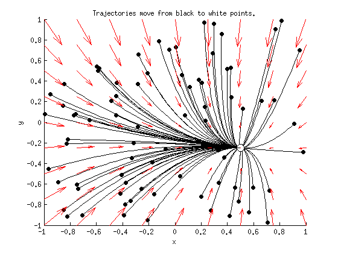
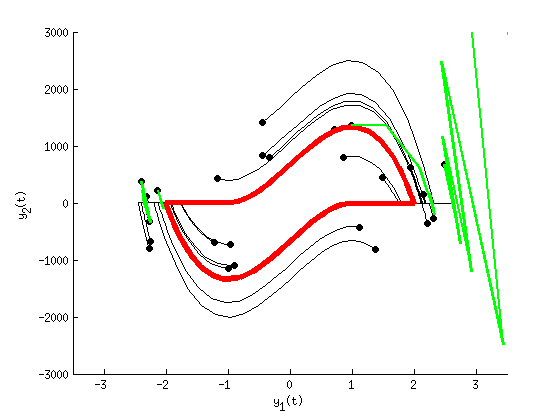
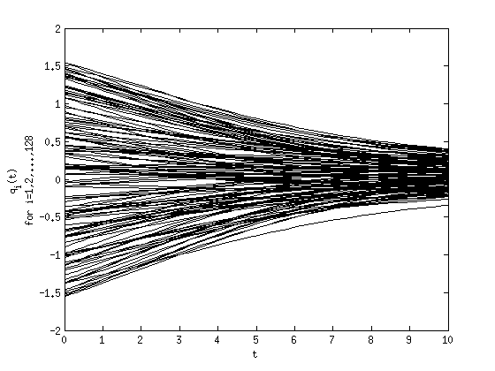

MATLAB Tutorial for Differential Equations
Contents
DISCLAIMER
Almost everything you can do in MATLAB, you can do in Python, for free, with the addition of the packages NumPy, SciPy, and Matplotlib (and SymPy for the symbolic stuff). While MATLAB may be free to you now while you're a student, it probably will not be once you graduate. Further, MATLAB is, as its name suggests, best suited to matrix computations. It is not a very good general-purpose programming language, and many of its misfeatures are made permanent by a need for backwards compatibility with 32 years worth of legacy scripts. So, while MATLAB is still the most commonly used language in many regions of academia, and so is an essential skill for any scientific/industrial programmer, you may want to investigate other languages if you decide you want to do any programming outside of this class.
The script which generates this document is uploaded at http://github.com/tsbertalan/matlabTutorial, and the rendered HTML version is visible at rawgit.com or htmlpreview.github.io.
% Make this script's results exactly reproducible. close all; clear all; rng(4);
Basics
Statements can be closed with a semicolon,
x = 3*4;
or left unclosed, in which case they will print when evaluated.
x = 3*4
x =
12
Most basic operations act as you'd expect.
3 + 6 - 2 * 3 / 9
ans =
8.3333
However, you may sometimes want to use elementwise operations with matrix arguments, particularly for multiplication and exponentiation. This is done by preceeding the operations with a period.
x = [1, 2, 3];
y = [4, 5, 6];
%x^y % fails
x .^ y
ans =
1 32 729
Longer statements can be broken across several lines with an ellipsis .... Whitespace is not syntactic.
x = 3 * 9 + 4 ... /32 +(... 5 / 3 + 6 ... );
Loops can be written with for or while. You'll probably find for more useful.
for x=1:10 y = x*2; end x = 1; while x <= 10 y = x*2; x = x + 1; end xvalues = [1 4 12 6]; total = 0; for x=xvalues total = total + x; end
The disp command can be used for explicitly printing things. Or fprintf can be used for more control.
disp(total)
fprintf('%.2f\n', sum(xvalues));
23 23.00
In the MATLAB Desktop, you can get help for most commands and functions by placing your edit cursor in the command and pressing F1. The help for fprintf looks like this on my machine:
The fact that the help for fprintf is just a little bit wrong (in our simple usage, fprintf writes to standard out, not to a text file as claimed) is just a fun bonus.
Standard flow control constructs are available.
x = sqrt(2); if x < 2 disp('less'); elseif true == false disp('impossible'); else disp('greater'); end
less
You can also use switch statements if you think they're warranted.
option = 'abcdefg'; switch option case 'abcdefg' disp('alphabet'); case 42 disp('meaning of life'); end
alphabet
Arrays
Matlab arrays are always at least two-dimensional. So, "vectors" are always either single-row or single-column matrices. You can inspect the dimensions of an array with the size command.
nValues = 1:10; size(nValues)
ans =
1 10
You can transpose a matrix with either an apostrophe or the transpose command.
size(nValues')
%size(transpose(nValues)) % (same thing)
ans =
10 1
You can compose arrays explicitly with commas, spaces, and semicolons. Commas and spaces are used to separate values within the same row, and semicolons are used to separate values in different rows.
A = [1 2 3; 4 5 6]
B = [7, 8, 9; 1, 2, 3]
C = [4, 6 2; 5, 8 2] % This is pretty ugly.
A =
1 2 3
4 5 6
B =
7 8 9
1 2 3
C =
4 6 2
5 8 2
Ranges of values can be generated with the START:INCREMENT:STOP syntax.
2:3:12
ans =
2 5 8 11
If you leave out INCREMENT, it defaults to one.
2:12
ans =
2 3 4 5 6 7 8 9 10 11 12
You can reshape arrays, possibly changing the number of dimensions.
reshape(1:12, 3, 4) reshape(1:12, 4, 3)
ans =
1 4 7 10
2 5 8 11
3 6 9 12
ans =
1 5 9
2 6 10
3 7 11
4 8 12
Higher-dimensional arrays are also possible, if its useful for the organization of your problem.
threeDeeArray = reshape(1:12, 2, 3, 2)
threeDeeArray(:,:,1) =
1 3 5
2 4 6
threeDeeArray(:,:,2) =
7 9 11
8 10 12
You can index an array explicitly.
threeDeeArray(1, 3, 2) = 42;
The end keyword stands for last entry.
threeDeeArray(1, end, 2)
ans =
42
You can also flatten multidimensional arrays back to a column-vector (transposed here for space).
flattened = threeDeeArray(:)' flattened(11) %%hold all; % Arrays can also be indexed by slices threeDeeArray(1, :, :)
flattened =
1 2 3 4 5 6 7 8 9 10 42 12
ans =
42
ans(:,:,1) =
1 3 5
ans(:,:,2) =
7 9 42
or by an array of indices.
indices = find(threeDeeArray(1, 3, :) == 42) threeDeeArray(1, 3, indices)
indices =
2
ans =
42
One of the major shortcomings of MATLAB is its lack of true lists--the closest you can come is by extending an array row-by-row or colum-by-column. This imposes a performance penalty, as the entire array is recopied every time. But it can sometimes be worth it for assembling small "stacks"hold all;.
x = []; y = []; for i=1:10 x = [x; i]; y = [y, i*2]; end size(x) size(y)
ans =
10 1
ans =
1 10
Multiplying two matrices the * operator rather than the .* operator performs matrix multiplication, so the number of columns of the first matrix must match the number of rows of the second.
A = [1 2; 3 4]; u = [5; 6]; b = A * u
b =
17
39
Basic plotting
It's good practice to initialize a figure with a call to figure. This command will return a handle that you can use later as in input to the same command to make the same figure active again.
To put multiple objects on the same plot, issue a hold on command after making your figure active. This prevents new plotted objects from replacing the previous ones.
2D line plots can be made with the plot command. Like all commands in this tutorial, nice documentation for this command is available with F1. Plots can be decorated with commands like title, xlabel, ylabel, ylim, or legend. Again, the built in help browser, or just Google, can be very useful for finding the names and syntax for less commonly\ used commands.
figureHandle = figure(); hold all; x = -3:.01:3; plot(x, ones(size(x)), 'k-'); plot(x, x, 'g.'); plot(x, x.^2 - 1, 'Color', 'red', 'LineWidth', 4); plot(x, x.^3 - 3*x, 'b-.', 'LineWidth', 2); ylim([-5, 5]); title('First four Probabilists'' Hermite polynomials'); xlabel('x'); ylabel('H_i(x)'); legend('i=0', 'i=1', 'i=2', 'i=3');
You can make scatterplots with the scatter command.
3D plots are possible with commands such as scatter3, or surf
figure(); hold all; [X,Y,Z] = peaks(25); surf(X,Y,Z); view(49, 18); % Set the view angle. % We can make a 3D scatterplot fairly intuitively, though formatting % options can get Byzantine. Zrand = rand(numel(Z), 1); Zrand = Zrand * (max(Z(:)) - min(Z(:))); Zrand = Zrand - mean(Zrand); % Arguments are (x, y, z, size, (variable for color mapping)): scatter3(X(:), Y(:), Zrand, 12, Zrand) % You can also plot curves in 3D, FWIW. theta = 0:.1:10*pi; r = sqrt(... max(abs(X(:)))^2 ... + ... max(abs(Y(:)))^2 ... ); x = r*cos(theta); y = r*sin(theta); z = linspace(min(Z(:)), max(Z(:)), numel(theta)); plot3(x, y, z, 'Color', 'red');
Functions vs scripts
This file is a MATLAB script--a series of statments, perhaps separated into cells by comment lines beginning with two % symbols. Incidentally, these cells can be evaluated one-by-one with the default Ctrl+Enter keyboard shortcut, similar to the Shift+Enter shortcut in Mathematica.
However, to do something a little more like real programming in Matlab, you'll want functions. Functions need to be defined in a separate *.m file. (Nested functions are possible, but not in scripts. It appears that classes can only be defined in their own files, not nested.)
I made a small example file to accompany this tutorial, called squareInputValue.m. It looks something like this:
function outputValue = squareInputValue(inputValue) outputValue = inputValue .^ 2; end
squareInputValue(2)
ans =
4
If you have to do slightly larger-scale programming in MATLAB, you may be interested in reading about its rudimentary object-orientation (look up classdef in the help), and package management (see import, and Google) capabilities.
Functions that can operate without arguments, such as the built-in rand, can be called without parenthases, although I personally dislike this style.
x = rand(); y = rand; z = x - y;
If your function can be performed in a single statement, like our squareInputValue example, you can write it as an anonymous function
f = @(x) x.^2; f(2)
ans =
4
The syntax is
|IDENTIFIER = @(ARG1 [, ARG2, ARG3, etc]) (statement with the given value(s) of ARG1(...))|
This is similar to Python's lambda keyword, where this function would be
f = lambda x: x**2
In some contexts, such as when integrating ODEs (see below) a function handle is desired. Unlike in Python, where both squareInputValue and f would be callable objects at this point, attempts to use squareInputValue as an object at this point would be interpreted as calls without arguments (due to the previously mentioned regrettable no-parenthases no-arguments optional syntax), and would result in the error
Error using squareInputValue (line 2) Not enough input arguments.
You can create a function handle to pass to other functions by prepending an @ symbol (our anonymous function f is already a function handle).
squaringHandle = @squareInputValue; squaringHandle(2)
ans =
4
Numerical integration of systems of ODEs
While you can write your own numerical integration routines, and schemes like forward Euler can be implemented directly in your script without much difficulty, MATLAB includes several built-in integrators to make your life easier. These are particulary useful when integrating stiff systems of ODEs, where error or stepsize control is required, and schemes such as forward Euler might fail spectacularly.
Numerically integrate a single linear ODE.
Let's define a simple 1D ODE. The built-in integrators expect your right-hand-side (RHS) function to take two arguments, the current time, and the current state. This allows you to have time-dependent effects, such as nonautomous forcing. For now, we'll just ignore the t argument.
dxdt = @(t, x) 2 - x;
Integrators vary in their required arguments, but they generally require a handle to a RHS function, a time range, and an initial condition, and return a trajectory as a sequence of points with corresponding times (or or however you interpret the independent variable). Here, we'll use a Runge-Kutta method of order 4(5), and plot the resulting trajectory.
timeRange = [0, 6]; initialCondition = 3.99; [T, X] = ode45(dxdt, timeRange, initialCondition); figure(); plot(T, X); xlabel('t'); ylabel('x(t)');
Numerically integrate a pair of coupled linear ODEs and plot the phase portrait.
We can also use a pair of linear ODEs.
A = [3, 1/2; ...
1/3, 6 ];
XYfixed = [1/2; -1/4];
rhs = @(t, XY) A * (XYfixed - reshape(XY, 2, 1));
Let's start with a bunch of random initial conditions.
numTrajectories = 80; times = 0:.01:10; trajectories = zeros(numel(times), 2, numTrajectories); for replicate=1:numTrajectories initialCondition = rand(2, 1) * 2 - 1; [times, states] = ode45(rhs, times, initialCondition); trajectories(:, :, replicate) = states; end
Let's plot those trajectories. However, we're going to add an extra feature--to visualize the vector field, we'll plot a quiver of arrows pointing in the direction of the vector field for a grid of points in the X-Y plane. Note that we use the function meshgrid to create a repeating grid of rows of values and columns of values, then evaluate the intersections of these rows and values to get and .
linearTwoDeeFig = figure(); hold on; for replicate=1:numTrajectories states = trajectories(:, :, replicate); scatter(states(1, 1), states(1, 2), 32, 'Marker', 'o', ... 'MarkerEdgeColor', 'black', 'MarkerFaceColor', 'black'); scatter(states(end, 1), states(end, 2), 100, 'Marker', 'o', ... 'MarkerEdgeColor', 'black', 'MarkerFaceColor', 'white'... ); plot(states(:, 1), states(:, 2), 'k'); drawnow(); end [X, Y] = meshgrid(-1:.25:1, -1:.25:1); gridShape = size(X); U = zeros(size(X)); V = zeros(size(X)); for i=1:gridShape(1) for j=1:gridShape(2) uv = rhs(0, [X(i,j); Y(i,j)]); U(i,j) = uv(1); V(i,j) = uv(2); end end quiver(X, Y, U, V, 'Color', 'red'); xlabel('x'); ylabel('y'); title('Trajectories move from black to white points.');
Numerically integrate a pair of nonlinear ODEs and plot the phase portrait.
Let's try a nonlinear system. In particular we can use two ODEs for a Van der Pol oscillator, which happen to be a stiff system. Because of this feature, integration methods with a fixed step size are not really appropriate, so we'll use ode23s, an integrator designed for such systems.
This integration example is taken straight from the MATLAB help files, although the plotting code is not.
figure(); hold on; dydt = @(t, y) [y(2); 1000*(1-y(1)^2)*y(2)-y(1)]; % See vdp1000.m, which comes with Matlab. numReps = 25; initialConditions = [rand(numReps, 1)*5-2.5, ... rand(numReps, 1)*3000-1500]; for i=1:numReps y0 = initialConditions(i, :); [unused_T,Y] = ode23s(dydt, [0 3000], y0); plot(Y(:, 1), Y(:, 2), 'k-') scatter(Y(1, 1), Y(1, 2), 'ko', 'MarkerFaceColor', 'black'); drawnow end % Let's plot the attracting limit cycle as well. [T,Y] = ode23s(dydt,[0 3000], [2 0]); plot(Y(:, 1), Y(:, 2), 'red', 'LineWidth', 4) xlabel('y_1(t)'); ylabel('y_2(t)');

Let's see just how bad Euler integration really is for this problem. The simple Euler integration implementation we'll use looks like this:
function [T, Y] = eulerIntegration(dydt, T, y0) T = reshape(T, [numel(T), 1]); Y = zeros(nsumel(T), numel(y0)); Y(1,:) = y0; for i=2:numel(T) dydtHere = dydt(T(i-1,:), Y(i-1,:)); Y(i, :) = Y(i-1, :) + (T(i) - T(i-1)) * ... reshape(dydtHere, [1, numel(y0)]); end end
We'll use a fine timestep of . It so happens that, for , the integration goes well until it hits the slow portion of the dynamics, where the fine timestep is a liability. But we'll use the slightly larger (fixed) timestep for now to show the more egregious problem with Euler for stiff systems.
for i=1:min(numReps, 4) y0 = initialConditions(i, :); [unused_T,Y] = eulerIntegration(dydt,0:0.0004:20, y0); plot(Y(:, 1), Y(:, 2), 'g-', 'LineWidth', 2) xlim([-3.5, 3.5]); ylim([-3000, 3000]); drawnow end
Numerically integrate a large nonlinear system of ODEs.
Of course, you can integrate dynamics of arbitrary complexity and number of variables--all the integrators such as ode45 or ode23s require is a handle to right-hand-side function. This you could write in a separte file, and use the @ prefix to make a function handle out of the name of this external function, allowing you to define many-line RHS functions.
Let's define a system of coupled oscillators as
For, say, . I'll define the right-hand-side function in a separate file, but it will look like this:
function dTdt = coupledOscRHS(thetas, omegas, K)
N = numel(thetas);
dTdt = zeros(size(thetas));
for i=1:N
dTdt(i) = 0;
for j=1:N
dTdt(i) = dTdt(i) + sin(thetas(j) - thetas(i));
end
dTdt(i) = omegas(i) + K/N * dTdt(i);
end
endSince our RHS function does not take a time and a state, as required, we'll wrap it in an anonymous function, baking in our chosen paramemters (a construction called a closure).
N = 128; omegas = rand(N, 1) * 0.1; omegas = omegas - mean(omegas); K = 0.25; rhs = @(unused_t, thetas) coupledOscRHS(thetas, omegas, K);
We'll start with a random initial condition, make a trajectory, then plot all the oscillators' phase angles over time.
ic = rand(N, 1) * pi - pi/2; [T, X] = ode45(rhs, [0, 10], ic); figure(); plot(T, X, 'black'); xlabel('t') ylabel({'\theta_i(t)'; sprintf('for i=1,2,...,%d', N)});
Find eigenvalues and eigenvectors.
Previously, we defined a pair of linear ODEs in terms of a coefficient matrix A.
A
A =
3.0000 0.5000
0.3333 6.0000
As you'll learn later in the course, the eigenvalues and eigenvectors of this coefficient matrix actually tell us a lot about the dynamics of the system. We can obtain them explictly with MATLAB.
[V, D] = eig(A);
V
D = diag(D) % MATLAB returns eigenvalues as a diagonal matrix when vectors are also requested.
V =
-0.9941 -0.1615
0.1085 -0.9869
D =
2.9454
6.0546
Let's plot these on the previous figure, centered at what (by construction) we know to be the fixed point.
figure(linearTwoDeeFig); for i=[1 2] v = V(:, i); p1 = XYfixed; p2 = XYfixed + v; plot(... [p1(1) p2(1)], ... [p1(2) p2(2)], ... 'b', 'LineWidth', D(i)); end ylim([-1, 1]);

The vectors point out the two directions along which motion towards the steady state is organized--one fast, and one slow. The thickness of the two lines corresponds to the corresponding eigenvalue, which tells you which direction is the fast one and which is the slow.
(Note that the actual Jacobian of this matrix is is actually -A, so the actual eigenvalues would both be negative, indicating stability of the steady state.)
Make a 1D direction field.
In the book, there are some informative plots, in the chapter about 1D dynamics, which show a direction field as a function of both time and the single variable. Let's create one of these for a quadratic ODE.
figure(); hold on; rhs = @(t, x) (4 - x) * (2 - x); title('dx/dt = (4-x) (2-x)'); xvals = -1:.5:4; tvals = 0:1:6; [XVALS, TVALS] = meshgrid(xvals, tvals); U = zeros(size(XVALS)); V = zeros(size(XVALS)); for i=1:numel(xvals) for j=1:numel(tvals) t = TVALS(j, i); x = XVALS(j, i); dxdt = rhs(t, x); dt = 1; % arbitrary dx = dxdt * dt; U(j,i) = dt; V(j,i) = dx; end end quiver(TVALS, XVALS, U, V, 'Color', 'black'); xlim([min(tvals), max(tvals)]); % Let's add a few trajectories. x0t0 = [3.99 0; 3 0; 2 0; 1 0; 0 0; -1 0; 0 2; 1 4; 3 4; 3 5; 0 5]; for i=1:11 x0 = x0t0(i, 1); t0 = x0t0(i, 2); % Integrate forward. [T, X] = ode45(rhs, [t0, max(tvals)], x0); plot(T, X, 'k-'); % Integrate backward to fill out the partial trajectories. if t0 > min(tvals) [T, X] = ode45(rhs, t0:-.01:min(tvals), x0); plot(T, X, 'red'); end end ylim([min(xvals), max(xvals)]); xlabel('t'); ylabel('x(t)');
Warning: Failure at t=1.653440e+00. Unable to meet integration tolerances without reducing the step size below the smallest value allowed (3.552714e-15) at time t. Warning: Failure at t=3.450693e+00. Unable to meet integration tolerances without reducing the step size below the smallest value allowed (7.105427e-15) at time t. Warning: Failure at t=4.653440e+00. Unable to meet integration tolerances without reducing the step size below the smallest value allowed (1.421085e-14) at time t.
For some of the reverse trajectories, we get a warning because either is changing very slowly (near the unstable fixed point), or is changing very quickly (as it decreases without bound towards negative infinity).
Symbolic computation
Your version of MATLAB might include support for symbolic computation. While Mathematica is a more common choice for doing symbolic computations, we'll go through an example here to introduce the MATLAB equivalent.
using syntax which is strangely divergent from normal MATLAB code, we can declare an abstract function.
syms f(x)
f
x
f(x) = f(x) x = x
If we had done this with the command
syms f(x)
instead, the function f would have been declared, but not x.
Note that our function does not yet have an associated expression. We can add that with a new syntax that looks disturbingly like the illegal action of assigning to a function evaluation.
f(x) = x^3*sin(x)
f(x) = x^3*sin(x)
We can differentiate this.
diff(f, x, 2)
ans(x) = 6*x^2*cos(x) - x^3*sin(x) + 6*x*sin(x)
( Note that, usually, the diff function is used for computing successive differences in a vector of values. Because MATLAB packages and namespaces are a relatively "new" feature (added in version 2008a), much of the MATLAB standard libraries simply dump their functions into the global namespace, and use complicated contextual rules to decide precedence, if they don't simply shadow each other. )
vec = [1 5 6]; diff(vec)
ans =
4 1
You can do indefinite integration
f(x) = x^2; int(f)
ans(x) = x^3/3
and definite integration.
f(x) = x^2; int(f, 0, 1)
ans = 1/3
infinite bounds are possible
answer = int(f*exp(-x^2/2), -inf, inf)
answer = 2^(1/2)*pi^(1/2)
Results can be converted to strings, and simplified.
disp('with char:') char(answer) disp('with pretty:') pretty(simplify(answer))
with char: ans = 2^(1/2)*pi^(1/2) with pretty: sqrt(2) sqrt(pi)
Using a further unintuitive abuse of notation, we can use the Symbolic Math Toolbox to integrate, for example, a first-order linear ODE.
syms y(t) b y(t) = dsolve(diff(y) == -t*y, y(0) == b)
y(t) = b*exp(-t^2/2)
Make a callable function out of this explicit solution, and plot it.
yt = symfun(y(t), [b, t]) figure(); tvals = 0:.1:4; bval = 1.0; plot(tvals, yt(bval, tvals)); title(strcat('y(t)=', char(y(t)), sprintf(', b=%.1f', bval))); xlabel('t'); ylabel('y');
yt(b, t) = b*exp(-t^2/2)
This example is taken nearly directly from the help files; for more information and tutorials, open the MATLAB desktop Help Browser, and search for "Symbolic Computation".
Debugging
It's often useful to inspect the state of a program at a particular point deep in a called function. To this end, you can set break points by clicking the - sign in the left margin of a line in the editor, to the right of the line numbers.
When you run a script which calls this code, assuming you did not call clear all, which clears both variables and breakpoints, the interpreter will stop when this line is reached, and indicate this state with both a green arrow in the margin of this code ...
... and a K before your interactive prompt in the Command Window.
At this point, you can disp out or modify variables and expressions. In newer versions of MATLAB, the "EDITOR" tab will contain buttons for continuing to the next breakpoint, stepping to the next line of code, stepping into the function about to be called, etc.
To quit debug mode, either press the continue button (or keyboard shortcut) (and possibly also clear your breakpoints), press the "Quit Debugging" button, or enter the command dbquit in thie Command Window.